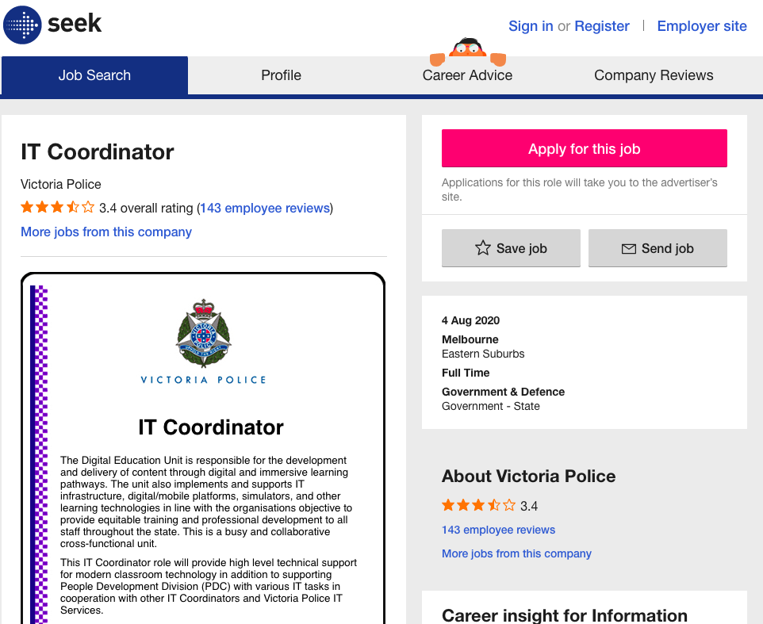
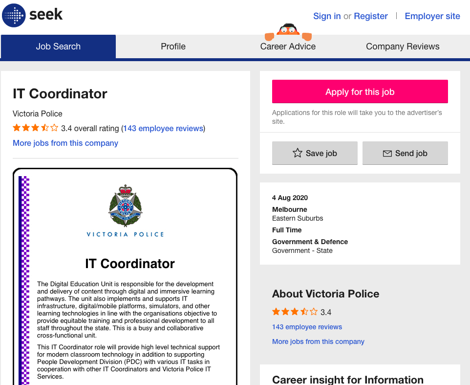

Description of the Position
"The Digital Education Unit as part of The Victoria Police need IT coordinator/s. In this role, IT coordinator will provide technical support for modern classrooms, as well as helping with different IT tasks. What makes this role appealing to me is that I will be dealing with an educational organization for the security of our country. I will be an advisor, trainer, supporter in this role which is fantastic."[1]
The Skills, Qualifications and Experience Required for the Position
In this role, the coordinator will be managing visual technology for classroom activities, coordinate video conferencing, deal with delivering online training materials and provide other IT advice and assistance. The coordinator should also be able to have good communication skills and customer service.
The Skills, Qualifications and Experience I Currently Have
IT requirements for this role is above my skills and qualifications at the moment. I do not have much technical information or experience, though this is one of the areas that I would like to master. However, I have can communicate well and I have efficient customer service skills. I am a good problem solver, and I can manage the time well.
How will I be Ready for the Position?
As I progress in my education at RMIT, hopefully, I will have a good understanding of technology and IT. I will learn the elements of online training. I will be able to solve technical problems when I complete my IT degree.